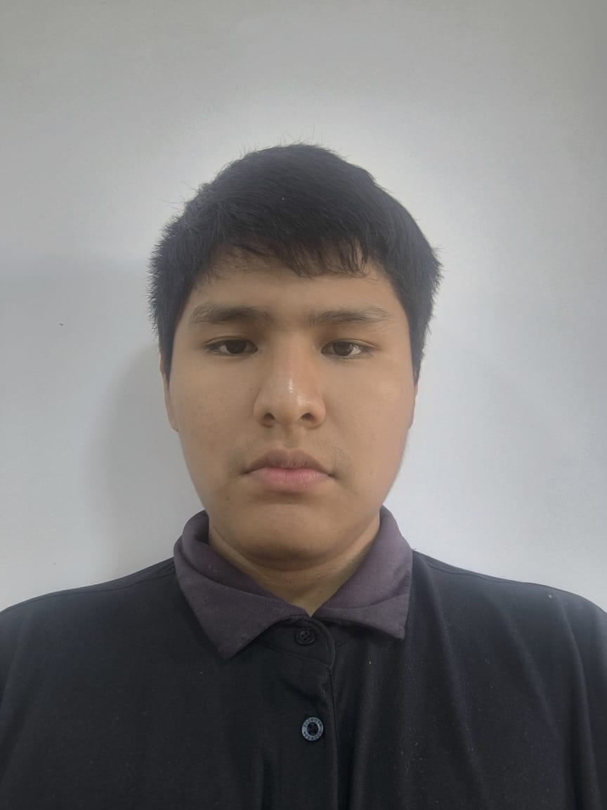

Nuestro equipo
Somos un grupo de estudiantes de la FIS comprometidos en brindar información a la comunidad iqueña, especialmente a la comunidad universitaria, sobre el VIH. Nuestro objetivo es educar sobre sus causas, consecuencias y efectos en la salud, así como promover medidas de prevención y ofrecer orientación sobre su tratamiento y manejo. Buscamos contribuir al bienestar de quienes viven con esta enfermedad, ayudando a mejorar su calidad de vida.

Juan Junior Hernández Uribe
Desarrollador y administrador del sitio web.
Pool Quintana Pineda
Desarrollador de software.

Angelo Colorado Vargas
Diseñador gráfico y especialista en UX.

Piero La Rosa Ramos
Community Manager.

Jesus Cutipa Curi
Asesor en salud.